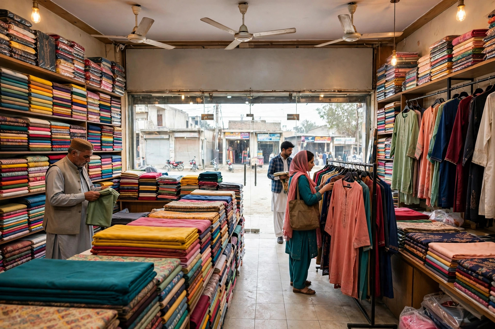
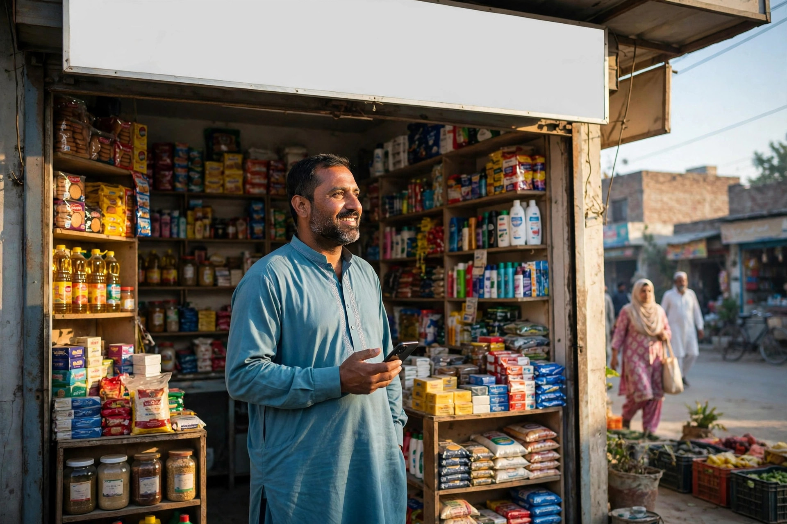

A customer in Mianwali who wants furniture, electronics, clothes, building material or a motorbike often does the first part of the shopping without leaving home. They search on Google, compare a few shops, look at photos, read reviews and decide where to go before they enter the bazaar. The shop they visit first often makes the sale, even when a similar shop stands a few doors away.
That is why SEO matters for shops and showrooms, not only for online businesses. Your goal is simple: appear clearly when people search for what you sell in Mianwali, make it easy to judge your shop, and make calling or finding you effortless. You do not need to list every item you stock. You need the right pages, presented well.
Build Pages Around What People Travel to Buy
Start with your main categories, not with a single crowded homepage. If you sell several distinct things, give each important category its own clear section or page, written in the words customers use. Explain what ranges you carry, what choices affect quality and price, what after-sales help you offer, and how someone can ask about availability before travelling.
Showrooms have a special advantage here. People often visit a showroom to see size, finish and colour in person. Your page should help them plan that visit: what they can see on display, where to park or enter if that is a common question, and when you are open. Honest detail reduces wasted trips and builds confidence before the customer arrives.

Make Your Google Profile Work Like a Shopfront
For many bazaar searches, your Google Business Profile is seen before your website. Treat it like a second shopfront. Use the correct category, list your main services and product groups, keep hours accurate on busy days and holidays, and add photos that show the real shop: the front, the display area and the products customers come to inspect.
- Show the entrance so first-time visitors recognise it quickly.
- Photograph displays in good light instead of using supplier pictures only.
- Answer common questions on the listing when people ask them.
- Ask satisfied buyers for honest reviews and reply to them.
Our guide to getting found on Google Maps in Mianwali covers the profile in more detail. The principle is the same for every shop: accuracy first, then steady small updates.
Answer the Questions Buyers Ask Before Visiting
Listen to the counter conversations in your own shop. People ask whether an item is in stock, whether delivery is possible, whether installation or fitting is included, and how a problem after purchase is handled. Turn the most common of those questions into short, helpful sections and articles on your website. That content matches real searches because it starts from real language.
This is also where our page on SEO services in Mianwali may help you see the full range of support available. Please note clearly: Zaheer Seo Expert is based in Layyah and has no office in Mianwali. We work with Mianwali shops from Layyah, online and by phone, which is how SEO work is normally delivered anyway.
Do Not Let an Old Website Undo Good Work
A slow website, tiny text on a phone, or a call button that is hard to find will lose buyers you worked hard to attract. Most bazaar customers search on mobile, often while they are already out. Check your own site on your own phone: can you read it in bright light, tap the phone number easily, and find the address without hunting through menus?
Keep product information honest and current. If a popular item is regularly unavailable, say how to ask about stock rather than promising it is always there. If prices change often, avoid publishing figures you cannot maintain. Trust is a ranking asset in a practical sense, because customers who trust a page call, visit and recommend.
Connect the Bazaar, the Profile and the Website
The strongest shops join everything together. The signboard, the Google profile and the website use the same name and phone number. Staff know the website exists and can point customers to it for directions or product details. A happy buyer is politely asked for a review while the experience is fresh. Small habits, repeated daily, build a presence that a single burst of work cannot match.
Shops in Mianwali have served customers from across the district for years through reputation and location. SEO simply carries that reputation into the phone search that now comes first. Start with the basics, keep them accurate, and your shop will be easier to find, easier to trust and easier to choose.

Frequently Asked Questions
Does a small shop in a Mianwali bazaar really need SEO?
If customers search on their phones before visiting or calling, then yes. You do not need a huge website. A clear Google profile, a simple page for your main products or services, correct hours and good photos already help people choose your shop.
Should I put every product I sell on my website?
Start with your main categories and the products people ask about most or travel furthest for. A clear page for each important category is more useful than a long, messy list of everything in the shop.
How do I handle prices on my website?
Only publish prices you can keep accurate, and update them when they change. If prices vary a lot, explain what affects the price and invite people to call for a current quote instead of showing old figures.
Where is Zaheer Seo Expert located for Mianwali shop work?
Zaheer Seo Expert is based in Layyah and has no office in Mianwali. Work for Mianwali shops and showrooms is handled online and by phone from Layyah.
Want More Customers From Google?
Call 0327 7350830 or email seozaheer14@gmail.com. Zaheer Seo Expert, Layyah - Rajan Shah Road, Rana Nagar, Chak 116 TDA, Pakistan. Open 24 hours.
Get Your SEO Strategy →